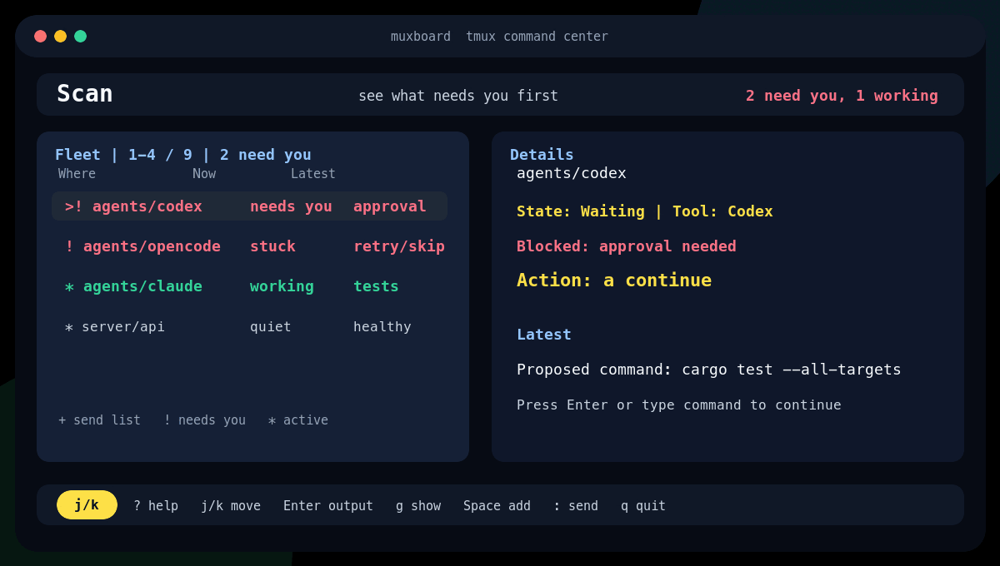

A command center for tmux agent fleets.
See every pane, know what needs you, and jump, reply, or broadcast without losing your tmux context.
cargo install --git https://github.com/aanari/muxboard --locked
muxboardSafe first look: just demo-start, then just demo-attach. It uses a private tmux socket and fake panes. No account, cloud service, or repo scan. The animation is synthetic and safe to share.

Fleet first
One calm board for Codex, Claude Code, Opencode, shells, and long-running jobs.
tmux-native
Run locally or over SSH. Jump to panes, open a dock, use a popup, or keep a control room window.
Safe control
Review multi-pane sends, save fleets, continue waiting agents, and keep advanced power one layer down.
Not a repo dashboard. Not a chat app.
Muxboard is the missing control layer for terminal work that already lives in tmux. It does not need VCS awareness to make agent fleets easier to operate.
Use it from tmux
set -g @plugin 'aanari/muxboard'Default key: prefix + M. Use popup, dock, drawer, split, or window presets.